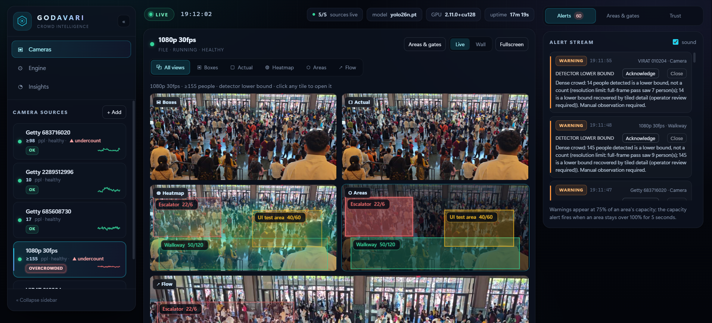

Each zone has a capacity. The dashboard shows count / capacity, occupancy %, density and a colour level — the same mental model as a venue's own capacity limit.
Warning at 75 % on the rising edge; OVERCROWDED only after 5 s at ≥ 100 %; repeats no more than once a minute. Signal, not noise — and every alert is persisted.
3.6 inferences/s on a CPU-only laptop for demos and small events; 32/s on a second-hand GPU; 100+ FPS on server silicon. Same image, one build arg apart.
Every number in this report was measured on this build, including the uncomfortable ones: box detectors under-count packed crowds. Where the picture is too small to resolve people, the dashboard shows ≥ N — a lower bound; when two independent crowd models agree it shows ≈ N and says “estimate”, never a confident wrong number.
rtsp:// · webcam index; files loop, streams reconnectCROWD_MAX_FRAME_WIDTH
| Layer | Technology | Version | Why this one |
|---|---|---|---|
| Language | Python | 3.11 / 3.12 | Native home of the vision and ML ecosystem; one language from ingest to API. |
| Detection | Ultralytics YOLO26n (YOLO11n / YOLOv8n fallback) | 8.4.120 | NMS-free, strong on small/dense objects, ~10 ms on GPU; nano variant keeps CPU viable. |
| Dense counting | PET + DM-Count under backend/services/dense | advisory | Head points and density maps for packed scenes; remain estimates until camera validation. |
| Tracking | ByteTrack via supervision | 0.18.0 | Identity persistence for distinct-people counts; pinned because ≥0.24 removed sv.ByteTrack. |
| Vision | OpenCV | 5.0.0.93 | Decode, resize, annotate, JPEG encode. Standard wheel + libgl1, because the 5.0 headless wheel ships no cv2. |
| Numerics | PyTorch (+ torchvision) | 2.11 CUDA 12.8 / 2.15 CPU | CUDA 12.8 is the first build with Blackwell (sm_120) kernels; cu121 silently fails there. |
| API | FastAPI + Uvicorn | 0.141.1 / 0.52.4 | Async REST, WebSocket and streaming in one process; typed models, zero boilerplate. |
| Frontend | Vanilla JS + CSS, Canvas sparklines | — | No build step, no framework, loads instantly from the same process. |
| Persistence | SQLite | stdlib | Alert history that survives restarts without operating a database server. |
| Packaging | Docker (slim-bookworm), Compose | CPU 0.67 GB / GPU 4.4 GB | Non-root uid 10001, healthcheck, weights baked in so startup needs no network. |
| Hardware path | CUDA 12.8 wheels, CPU fallback | sm_50 → sm_120 | Same source runs on a laptop or a 96 GB server GPU; device chosen at start-up. |
| Environment | Build | Size |
|---|---|---|
| Windows dev | backend/tools/install.sh → .venv | 7.5 GB |
| Any host, CPU | docker build -t godavari:cpu . | 0.67 GB |
| GPU host | --build-arg TORCH_INDEX_URL=…/cu128 | 4.4 GB |
| Ubuntu 24.04 VM | venv + cu128 wheels | 7.5 GB |
requirements.txt; every version above is the
one actually installed and exercised, not a target.
| Path | Responsibility |
|---|---|
app/pipeline.py | CameraWorker + registry (capture → detect → track → zones) |
app/detector.py | Model manager, device selection, fallbacks |
app/zones.py | Polygon geometry, occupancy, density, levels |
app/alerting.py | Sustain + cooldown state machine |
app/heatmap.py | Decaying 48×27 density grid |
app/store.py | SQLite alert history, CSV export |
static/ | Dashboard (HTML/CSS/JS, no build) |
| Environment | Detector | imgsz | Throughput | Reading |
|---|---|---|---|---|
| Development laptop, CPU-only torch | YOLO26n | 1280 | 3.6 inferences/s (1 camera); 1.8 FPS each with 2 cameras | Demo / small event |
godavari:cpu container | YOLO26n | 640 | 3.2 FPS, one camera, healthy container in ~9 s | Cheap always-on VM |
| RTX 3050 8 GB laptop GPU | YOLO26n | 640 | 32 inferences/s — 4 cameras × 8.0 FPS, 1.8 GB VRAM, ~130 % CPU | 4–6 cameras per box |
| RTX PRO 6000 (96 GB), Ubuntu 24.04 | YOLOv8x | 960 | 102 FPS inference, 35.8 FPS end-to-end | Large headroom, heavier model |
model.predict only.--gpus all in Docker and a bare venv on the VM; both
reported cuda_available: true before timing.One shared model instance means adding the fifth camera does not add a second copy of the weights — the marginal cost is a capture thread and its frame buffers.
The server GPU is not the constraint — the single-threaded decode and annotation path is. At 960 px, a YOLOv8x frame costs 9.8 ms of inference inside a 28 ms frame, so roughly two-thirds of the wall clock is spent outside the model:
| Setting | Effect |
|---|---|
CROWD_IMGSZ 640 → 1280 | Better far-field recall, ~2× cost |
CROWD_MAX_FRAME_WIDTH | Caps decode cost per frame |
CROWD_TARGET_INFER_FPS | Per-camera budget; the main fairness dial |
CROWD_MODEL n → s | Higher recall, ~3× compute |
CROWD_STREAM_FPS / JPEG_QUALITY | Trades stream CPU for smoothness |
CROWD_WS_PERIOD | Dashboard push rate vs. fan-out cost |
| Scale | Architecture | Change required |
|---|---|---|
| 1–6 cameras | This application, one GPU container | None — deploy as-is |
| 6–30 cameras | Several containers, one per GPU or per 5 cameras | Ops only; zones per camera already supported |
| 30–100 cameras | MediaMTX fan-in, NVDEC decode, batched inference | New worker + Triton service (specified in docs/PRODUCTION_ARCHITECTURE.md) |
| 100+ cameras | Sharded workers, TimescaleDB, server-side mosaic | Control plane and monitoring stack; the zone/alert model is unchanged |
Fifteen licensed clips of actual mass gatherings — Maha Kumbh 2025, the Kaaba tawaf, Mumbai
platforms — sampled at 3 s, 15 s and 30 s with YOLO26n at imgsz=1280. The results
are useful precisely because they include the failures:
| Clip | People detected | Reading |
|---|---|---|
kumbh_2025_river_walk — packed one-way flow | 23 / 29 / 19 | Reliable dense but resolvable |
kumbh_2025_walk_4k — walking tour | 22 / 14 / 17 | Good front row clear, back rows occluded |
tawaf_4k_walk — circular mass at the Kaaba | 15 / 20 / 17 | Partial only the front rank resolves |
kumbh_2013_maha_shivratri — elevated wide view | 6 / 12 / 27 | Variable tiny figures, swings with visibility |
station_rush_mumbai — platform at 8 pm | 8 / 9 / 7 | Under-counts ~40 visible at the door |
kumbh_2025_crowd_walk — night, backlit | 6 / 10 / 2 | Degrades lighting dominates |
railway_crowd_india — overhead crush | 1 / 3 / 3 | Fails interlocked crowd is one texture |
hajj_stock_nocopyright — aerial Haram | 4 | Fails tens of thousands visible, 4 found |
A bounding-box detector needs to see a whole body with edges to separate it from its neighbour. At platform-crush density there are no gaps, so people merge into texture. This is the documented behaviour of the entire box-detector family, not a defect in this code — and it is the single most important thing a buyer should know before trusting any such product's headline accuracy.
Where it is strong: resolvable, medium-density scenes — gate queues, walkways, plazas, station concourses — which is exactly where zone-capacity alerting is useful, because the trigger is a trend in occupancy, not a precise census.
Mitigations in place: 1280 px inference for far-field detail; smoothed counts so single-frame misses do not alarm; alerts that require sustained overload; capacities chosen per zone by the operator.
Agreement within 25% publishes the mean as ≈ N
(dense_consensus); an unconfirmed count stays ≥ N with capacity
alerts suppressed.
| Sample clip | Detector | PET | DM-Count | Headline | Spread |
|---|---|---|---|---|---|
| 1080p hall | ≥156 | 389 | 383 | ≈386 | 1.6% |
| Getty 683716020 | ≥74 | 472 | 419 | ≈446 | 11.9% |
| Getty 2289512996 | ≥10 | 27 | 49 | ≥10 | 57% |
| VIRAT 010204 | ≥11 | 16 | 7 | ≥11 | 56% |
selected_count: promotion still requires per-camera validation.
| Pass | People found | Cost |
|---|---|---|
| Full frame @ 640 (default) | 0.3 | 10 ms |
| 2×2 probe @ 640 — only if the default found ≤ 6 | 4.4 | 15 ms |
| 3×3 detail @ 1280 — only if the probe disagrees | 135.4 | 58 ms |
cameras.json.tier=detail, and
≈386 when PET (389) and DM-Count (383) agree within 1.6%;
selected_count stays null in both dense modes; the badge reads
≈ N · MODEL CONSENSUS · ESTIMATE.zones_version and writes an audit row.ack_by=operator with an audit entry.docker restart kept the
camera and its two zones (volume-backed).cuda: true,
four cameras, 32 inferences/s.docker compose config./api/system with a 120 s start period for cold
model load; single-process design is documented because multiple workers would split
the in-memory registry.| Relative density | Needs homography for people/m² |
| Very dense crowds | Escalation plus two independent models gives ≈ N when they agree and ≥ N when they do not; neither is a census, and promotion still requires per-camera validation. |
| Cost of detail | 3×3 @1280 on a dense camera roughly halves its frame rate (≈8 → 4 FPS), which is why it is gated behind two cheap checks |
| Dead camera | Detected and marked degraded (stale/frozen/dark); those states never clear an alert |
| Delivery | Dashboard, CSV/PDF reports and signed webhooks with retries; no SMS or email sink yet |
| Scale-out | Single process; sharded design specified, not built |
Real-Time Crowd Monitoring and Congestion Management for bathing ghats, access routes and public areas — occupancy, dense estimates and timely alerts for designated control teams.
Every large gathering is still managed by eyeballs on a wall of screens. Counts do not help: an operator needs to know a zone is over capacity, and needs to know it before the crush, not after. Godavari adds polygon zones with real capacities to ordinary cameras, smooths the counts so they do not flicker, and raises one alert when a zone stays full — then writes it to a history you can export. It runs on a laptop CPU today, on a single GPU for four to six cameras, and ships as one 670 MB container with no cloud dependency.
| # | Action | What the judge sees |
|---|---|---|
| 1 | + Add → *Pilgrim* → pack walk to the river | Live annotated feed with counts within seconds; status goes LIVE |
| 2 | Draw zone → gate polygon → capacity 8 → Finish | Zone chip appears with count/capacity and occupancy %, colour-coded |
| 3 | Toggle H then Z, then F | Heatmap of compression, zone polygons, flow arrow with speed |
| 4 | Lower the capacity below the current count and wait 5 s | WARNING on the rising edge → OVERCROWDED, chime, alert in the stream |
| 5 | Reload the page; then Export CSV | Alerts persist across restarts and leave the app as data |
| Criterion | Evidence in this build | Where to look |
|---|---|---|
| Impact | Zone occupancy against declared capacity is the number a control room acts on; alerts are rate-limited so they stay trusted. | §02 zones & alerts |
| Technical depth | Detection + tracking + polygon geometry + EMA smoothing + hysteresis state machine + WebSocket fan-out in one process; CUDA/CPU parity; measured bottleneck analysis. | §03, §05, §06 |
| Execution | Working UI, REST API, MJPEG, SQLite history, Docker CPU and GPU images, deployment guide, evaluated on 15 real clips. | §07 |
| Originality | Occupancy-first model with alert discipline, rather than another detection demo; states its own failure modes. | §01, §06 |
| Feasibility | Runs on a laptop today; scaling path costed by camera count with named technologies. | §05, §06 |
| Integrity | No fabricated accuracy: no mAP claimed without labels; AGPL and footage licences disclosed. | §06, §08 |
| Item | Why it matters |
|---|---|
| Per-camera validation (manual counts → MAPE) | Promotes a camera from advisory estimate to a signed-off count source |
| Per-camera homography → people/m² | Turns relative density into safety bands |
| Labelled gate clip → first real mAP | Replace qualitative claims with metrics |
| Auth + role-scoped API keys | Multi-operator deployments |
| TimescaleDB + SSE fan-out | Retention, aggregates, restarts without dropping dashboards |
| MediaMTX + NVDEC + Triton | The 100-camera step; keeps the current path as the dev/CPU path |
Effort is deliberately not quoted per item: each is a week-scale task for one engineer, and the first two unlock the others.
CROWD_MODEL | by device: rtdetr-l / yolo26n |
CROWD_CONF | 0.30 |
CROWD_IMGSZ | 640 |
CROWD_DETAIL_PASS | on |
CROWD_DETAIL_PROBE_BELOW | 6 |
CROWD_DETAIL_IMGSZ / GRID | 1280 / 3 |
CROWD_POINT_BACKEND | dense (PET) |
CROWD_DENSITY_BACKEND | dense (DM-Count) |
CROWD_POINT_PERIOD_S / DENSITY_PERIOD_S | 5 / 6 |
CROWD_PET_CORRECTION | off until locally validated |
CROWD_WARN_PCT | 75 |
CROWD_ALERT_SUSTAIN / COOLDOWN | 5 s / 60 s |
HOST / PORT | 127.0.0.1 / 8000 |
GET /api/cameras | All cameras + live metrics |
POST /api/cameras | Add file / sample / RTSP source |
GET /api/cameras/{id} | One camera |
DELETE /api/cameras/{id} | Stop and remove |
PUT /api/cameras/{id}/zones | Replace polygon areas (bumps version) |
PUT /api/cameras/{id}/count-lines | Gate lines (entry/exit counts) |
PUT /api/cameras/{id}/display | Bake detection boxes or not |
GET /api/cameras/{id}/stream | Annotated MJPEG; ?raw=1
for the clean frame |
GET /api/cameras/{id}/snapshot | Single annotated JPEG |
GET /api/samples | Sample library |
GET /api/alerts | Alert history |
POST /api/alerts/{id}/ack | Acknowledge, with audit row |
GET /api/alerts/export | CSV export |
GET /api/analytics | Forecasts, growth, queues, transitions |
GET /api/reports/daily.pdf | Daily PDF report |
GET /api/audit | Operator and system audit trail |
GET /api/models | Registry, licence, swap |
GET /api/health · /metrics | Scheduler and Prometheus metrics |
GET /api/system | Model, device, uptime |
WS /ws | Snapshot push every 0.6 s |
bash tools/install.sh →
bash tools/start_dev.sh, add a sample camera, read /api/system.
Containers per docs/DEPLOYMENT.md; clip metrics with
tools/fetch_footage.py and tools/bench_models.py.